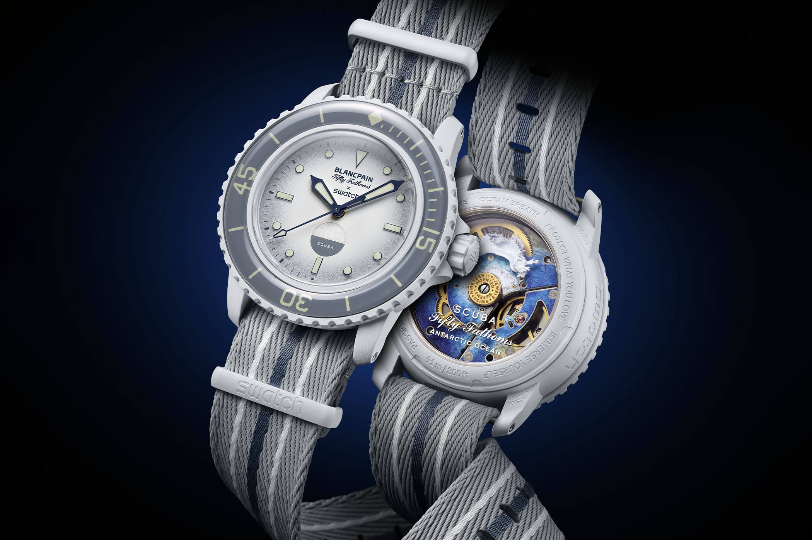
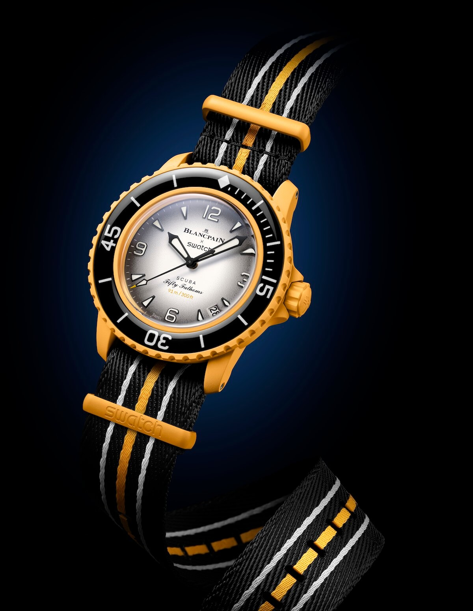

The Blancpain x Swatch NATO Strap Is Made From Recycled Fishing Nets
The Blancpain x Swatch Bioceramic Scuba Fifty Fathoms went on sale on 9 September. Most of the coverage went to the queues and the collaboration itself. The strap it ships on is a recycled-material NATO, and it reached more people in a weekend than most sustainable strap projects manage in years.
 Nenad Pantelic • October 10, 2023
Nenad Pantelic • October 10, 2023

The Bioceramic Scuba Fifty Fathoms marks 70 years of the Blancpain Fifty Fathoms. Five models, one per ocean, $400 each, sold in Swatch stores only and not limited in number. The case measures 42.3mm by 14.4mm with a 48mm lug-to-lug, runs a Sistem51 automatic, and is rated to 50 fathoms, or 91 metres.
Bioceramic is Swatch's own material, two thirds ceramic and one third bio-sourced plastic derived from castor oil. Case, bezel and crown all use it. The glass is also bio-sourced, with an anti-scratch coating.
The format follows the MoonSwatch, Swatch's 2022 collaboration with Omega, which used the same in-store-only release model. The main difference is the movement: where the MoonSwatch is quartz, the Scuba Fifty Fathoms carries the mechanical Sistem51, visible through a transparent case back.
What this strap is made of
A NATO is a one-piece strap. A single length of webbing passes under both spring bars, with a shorter second piece looping back under the watch head, instead of two halves attached either side of the case. If a spring bar fails, the watch stays on the strap, which is the reason the design exists. The trade-off is that the extra layer of webbing under the case lifts the watch slightly off the wrist.
All five models here ship on a NATO woven from fishing nets recovered from the sea.
Discarded nets are among the more damaging categories of ocean plastic, because they continue to trap marine life after they stop being used. Swatch is recovering, cleaning, pelletising and re-spinning them into strap webbing.
Swatch extended the material choice to the hardware. The pin buckle and the keepers are bioceramic instead of steel, which keeps the weight down and removes any part that could corrode.
On durability, recycled webbing depends heavily on how carefully the input was sorted. Mixed polymers spun into a single yarn produce uneven fibre lengths, which is what causes cheaper nylon straps to go fuzzy at the cut edges over time.
The Scuba takes a standard pass-through strap if you want to change it, so your existing straps will probably fit.
For cleaning the original, cool water with a little soap, worked by hand and air dried is the safe approach. Heat is what stiffens recycled nylon webbing.

The five versions
Each model carries a stripe pattern tied to an ocean, with a printed nudibranch from that ocean on the case back. The Arctic and Antarctic models reference older Fifty Fathoms details, using the vintage Blancpain logo, no date and circular hour markers. The Arctic carries the "NO RADIATIONS" marking and the Antarctic has the moisture indicator. The Pacific, Atlantic and Indian models use the modern logo, a date and Arabic numerals with triangular markers.
| Arctic Ocean (SO35N100) | Beige case, burnt orange bezel and strap |
| Atlantic Ocean (SO35A100) | Blue case, navy, blue and white striped strap |
| Pacific Ocean (SO35P100) | Yellow case, black bezel, black with white and yellow stripes |
| Indian Ocean (SO35K100) | Green case, black bezel, black, red and green strap |
| Antarctic Ocean (SO35W100) | White case, grey strap |
| Price | $400 / £340 |
| Availability | Swatch stores only, from 9 September 2023 |
What we think
Two separate things are worth judging here, and they tend to get mixed together.
As a strap, this is a solid mass-produced NATO with a reasonably dense weave and good colours. It uses the full double-layer NATO construction rather than a single pass, so it adds the usual couple of millimetres beneath the case. At 42.3mm by 14.4mm the Scuba is already tall, and the extra layer does not help.
As an industry moment it is the more interesting of the two. Recycled-ocean-plastic straps have been announced for several years, usually in small volumes on watches with limited distribution. Ulysse Nardin's R-STRAP and Panerai's recycled PET straps are both earlier examples. The Swatch collaboration put the same idea into mass production at a mainstream price.